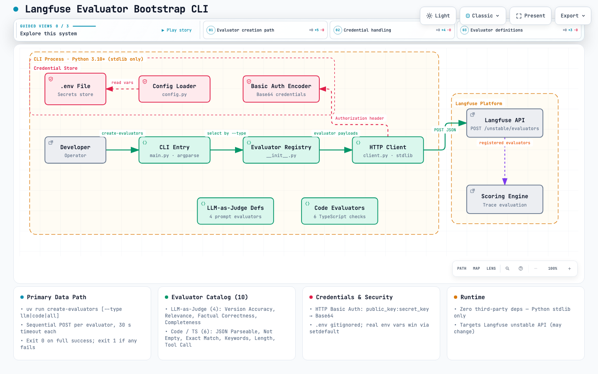
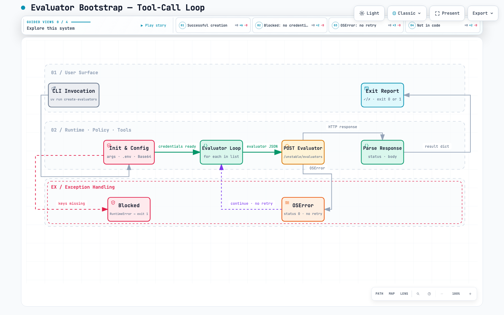

Architecture Diagram
High-level view of the CLI components, credential handling, evaluator registry, HTTP client, and Langfuse platform integration.

Tool-Call Loop Workflow
Step-by-step evaluator creation flow showing the CLI invocation, config gate, HTTP POST loop, and exception handling paths.